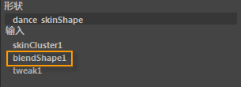
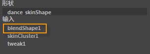
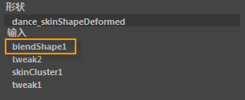

- 在“形变编辑器”(Shape Editor)中，选择(Create > Blend Shape Deformer) >

- 在“动画”(Animation)、“绑定”(Rigging)和“建模”(Modeling)菜单集中：“变形 > (创建)融合变形”(Deform > (Create) Blend Shape) >
“基本”(Basic)选项卡
- 融合变形节点
-
指定融合形变变形器（融合变形节点）的名称。您应该重命名该节点，使其指示融合形变变形的角色（例如，lipSync）。如果不指定名称，Maya 将提供默认名称 blendShapen。可以在一个或一组对象上创建多个融合形变变形器。有关详细信息，请参见创建融合形变变形器。
- 封套(Envelope)
-
指定融合形变变形的比例因子（影响量）。使用滑块指定 0.0000 到 1.0000（默认）之间的值。这等同于在“属性编辑器”(Attribute Editor)中设置“封套”(Envelope)值，或者在形变编辑器(Shape Editor)中设置融合形变变形器的“权重”(Weight)值。有关详细信息，请参见缩放融合变形的影响。
原点(Origin)
指定融合变形是否与基础对象形状的位置、旋转和缩放（“局部”(Local)或“世界”(World)）相关。默认为“局部”(Local)。
- 局部(Local)
-
“局部”(Local)会将基础对象形状与目标对象形状融合，并忽略基础对象和目标对象之间的位置、旋转和缩放差异。对于面部动画设置，通常需要选择“局部”(Local)。通常，如果您希望将目标对象置于多个不同的位置以方便查看，但又不希望这些位置影响变形，则“局部”(Local)非常有用。
- 世界(World)
-
“世界”(World)将基础对象形状融合到目标对象形状中，并考虑目标对象形状之间的任何位置、旋转和缩放差异。
目标形状选项(Target Shape Options)
从下列选项中选择：
- 介于中间(In-Between)
-
指定是依次融合还是并行融合（默认）。
如果启用此选项，融合将依次发生。形状过渡将按照您选择目标对象的顺序出现。效果如下：融合变形将能够从第一个目标形状更改为第二个目标形状，依此类推，在链接在一起形成“介于中间”形状的目标形状系列之间循环往复。
如果禁用此选项（默认），将出现并行融合。各个目标形状能够以并行方式同时（而不是逐一依次）影响融合。通常，对于面部动画设置，您需要关闭“介于中间”(In-Between)，以便可以获得多种基本面部表情，为所有可能的表情奠定基础。由于融合是并行发生的，因此，您可以随时控制每个基本表情的影响，以获得几乎无限多个极细微差别的表情。
- 检查拓扑(Check Topology)
-
选择此选项可先检查基础对象和目标对象是否具有相同的拓扑（多边形对象为顶点，NURBS 对象为 CV），然后再创建一个融合形变变形器。请参见使用多个目标对象创建融合变形。默认设置为启用。
- 删除目标(Delete Targets)
-
选择此选项可在创建融合形变变形器后删除目标对象。有关详细信息，请参见删除目标对象。默认设置为禁用。
“高级”(Advanced)选项卡
变形顺序(Deformation order)
指定融合变形节点在基础对象历史中的放置。大多数情况下，您可以选择“自动”(Automatic)（默认），并让 Maya 判断放置融合变形节点的位置。除非正在执行特定的任务且知道需要将融合变形节点放在对象历史中的位置，否则不必更改顺序。
- 自动(Automatic)（以前称为“默认”(Default)）
-
默认推荐设置。Maya 将根据选定对象上当前已连接的变形器确定融合变形节点应在对象历史中所处的位置。融合变形节点通过使用“变形前”(Pre-deformation)或“变形后”(Post-deformation)选项予以放置：
- 如果选定对象的历史中没有变形器，或者具有蒙皮、簇或融合形变变形器，则融合变形节点将使用“变形前”(Pre-deformation)选项。形状逆变器支持这些类型的变形器。
- 如果对象在其历史中具有任何非线性变形器（弯曲、扩张、正弦、挤压、扭曲、波浪）或下列任一变形器，则融合变形节点将使用“变形后”(Post-deformation)选项：Delta Mush、抖动、晶格、变形、肌肉、曲线上的点、雕刻、收缩包裹、软修改、固化、张力、纹理、线条、包裹和褶皱。形状逆变器不支持这些类型的变形器。
实际上，形状逆变器允许在蒙皮之前添加融合变形，即：通过逆变形状，使其在蒙皮变形网格之后生成正确的结果。
- 变形前(Pre-deformation)（以前称为“链前面”(Front of chain)）
-
Maya 将定位融合变形节点，使其在选定对象的形状历史中的所有变形器（包括蒙皮节点）之前、但在任何调整节点之后解算。调整节点在变形时跟踪基础对象上点的平移。请参见在对象上进行点调整。
融合形变变形器通常用于对蒙皮角色创建变形效果，使“变形前”(Pre-deformation)确保在蒙皮所引起的融合形变变形效果之前出现这些效果。有关执行此操作的详细信息，请参见创建蒙皮前修正形状。
如果对象的历史中存在非线性变形器（弯曲、扩张、正弦、挤压、扭曲、波浪）或下列任一变形器，则不应使用“变形前”(Pre-deformation)选项：晶格、包裹、收缩包裹、线条、褶皱、肌肉、软修改、雕刻、纹理、抖动和曲线上的点。原因在于形状逆变器不支持这些变形器的效果，因此如果在融合变形之后解算，则融合形变变形器的结果将不正确。
但在这种情况下，如果需要使用“变形前”(Pre-deformation)选项，最佳解决方案是禁用所有不受支持的变形器，方法如下：为变形器节点的属性选择“无效果”(Has No Effect)选项；或者，将变形器的“封套”(Envelope)属性值设置为 0（没有影响）。
- 变形后(Post-deformation)（以前称为“之前”(Before)）
-
Maya 将定位融合变形节点，使其在选定对象上的所有其他变形器之后解算。在对象的历史中，融合变形节点将放置在所有其他变形器上方，对象的形状节点正下方。
变形后形状主要用于雕刻蒙皮角色上的修正形状。有关信息，请参见创建蒙皮后修正形状。这些目标形状必须是“切线空间”(Tangent Space)或“变换空间”(Transform Space)类型（请参见添加融合变形目标选项(Add Blend Shape Target Options)）。
“变形后(Post-deformation)”顺序可确保在计算蒙皮变形效果之后对修正形状解算，因此增量较小，并且变形通常比使用变形前形状更平滑。
- 之后(After)
-
Maya 将变形器定位到紧邻堆栈中可变形对象的形状节点之后，使其在其他变形器之后进行解算。
这实际上会创建一个新形状，该形状具有自身的调整节点。您可以使用“之后”(After)在对象历史当中的某处创建中间变形形状。对象的原始形状不会隐藏。
- 分割(Split)
-
Maya 将融合形变变形分割为两个变形链。可以使用“分割”(Split)同时以两种方式使对象变形，从而创建源自同一原始形状的两个最终形状。
- 平行(Parallel)
-
在对象历史中，Maya 将融合变形节点与现有输入节点平行放置，然后融合输入节点和变形器提供的效果。顶部的最终形状节点之前放置了融合现有输入节点和新变形器效果的平行融合器节点（默认名称：parallelBlendern）。
如果想要融合多个变形器作用于单个对象的影响，平行非常有用。例如，如果通过“自动”(Automatic)放置为对象创建融合形变变形器，然后通过“平行”(Parallel)放置创建“正弦”(Sine)变形器，可以通过融合每个变形器的影响直接控制每个变形器对对象的影响程度。
parallelBlender 节点为每个变形器节点提供了一个权重通道，您可以对其进行编辑。
- 排除(Exclusive)
-
指定变形器集是否位于某个划分中。划分中的集不能有重叠的成员。如果启用该选项，“要使用的划分”(Partition To Use)和“新划分名称”(New Partition Name)选项将变为可用。默认设置为禁用。
- 要使用的划分(Partition To Use)
-
仅当“排除”(Exclusive)处于启用状态时才可用。
列出所有现有划分和默认选择“创建新划分”(Create New Partition)。如果选择“创建新划分”(Create New Partition)，则可以编辑“新划分名称”(New Partition Name)字段，以指定新划分的名称。
- 新划分名称(New Partition Name)
-
仅当“排除”(Exclusive)处于启用状态时才可用。
指定将包括变形器集的新划分的名称。建议的划分名称为 deformPartition，如果尚不存在，则将创建该名称。通常，可能会将所有排除式变形器集置于名为 deformPartition 的划分中。但是，可以根据需要创建多个划分并为这些划分命名。